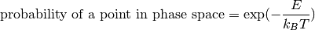

Week 1¶
Phase Space¶
Why is statistics important? Remember we are dealing with Avogadro’s number of DoFs. If we are going to calculate the dynamics of this system by calculating the dynamics of each particles. To store one screenshot of the system with each DoF take only 8 bits, we need  bytes that is
bytes that is  GB. It is not even possible to store only one screenshot of the system. So time to change our view of these kind of systems.
GB. It is not even possible to store only one screenshot of the system. So time to change our view of these kind of systems.

Newton’s plan of mechanics. Mechanics was in the center of all physics.
What is mechanics? It deals with dynmaics in the following way:
- Description of initial state
- Time evolution of the system
- Extraction of observables
As we already mentioned initial state, we need to explain how to describe a state. A vector in phase space gives us a state. Time evolution is motion of points in phase space. Finally, we can do whatever is needed to extract observables, for example just use projection of points in phase space.
Problem is, when it comes to stat mech, it’s not possible to do all these DoFs one by one. We need a new concept.
Boltzmann Factor¶
